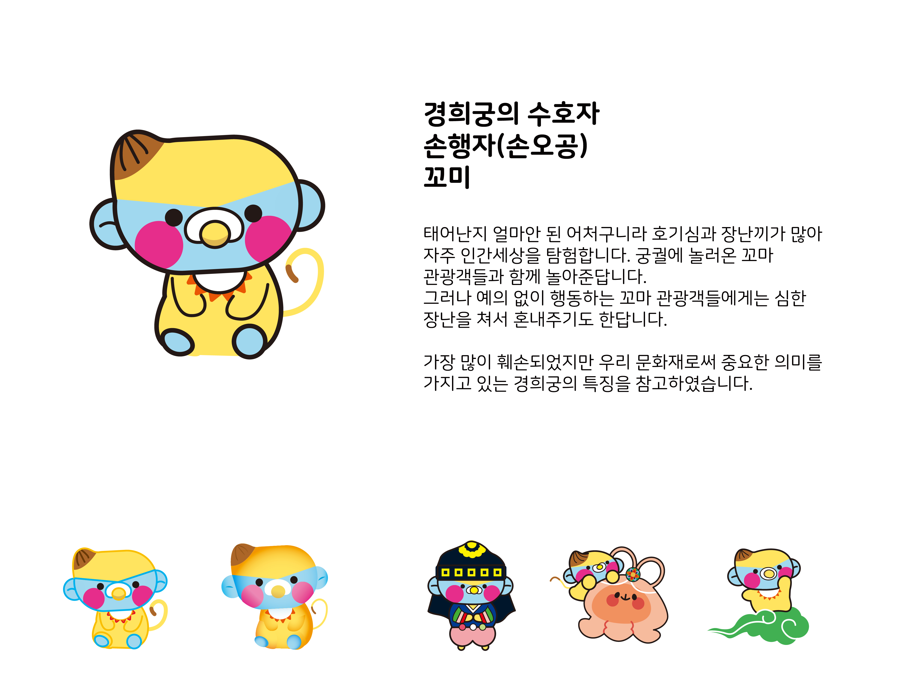

어처구니 씨밀레
제작시기:2학년 방학
제작이유: 공모전 참가(궁능 캐릭터 공모전)입선
컨셉: 5대궁을 수호하는 5명의 잡상 수호신
설명: 어처구니는 잡상을 의미하는 단어로, 잡상은 궁궐의 지붕끝에서 집을 보호하는 장식입니다. 5대궁의 특징을 각각 담은 캐릭터 5명을 디자인 하였습니다. 한국적인 색감과 이름, 현대적인 디자인을 융합하였습니다.
처음으로 3D풍의 일러스트 캐릭터로 제작해 보았습니다. 다양한 느낌으로 제작하려 시도를 많이 했던 것 같습니다. 응용포즈를 많이 제작해야 해서 자연스러운 포즈를 그리는 것이 어려웠고 여러명을 만들기 보다는 한 캐릭터로 표현하는 것이 더 낫이 않았나 하는 아쉬움이 드는 공모전 이었습니다.
제작이유: 공모전 참가(궁능 캐릭터 공모전)입선
컨셉: 5대궁을 수호하는 5명의 잡상 수호신
설명: 어처구니는 잡상을 의미하는 단어로, 잡상은 궁궐의 지붕끝에서 집을 보호하는 장식입니다. 5대궁의 특징을 각각 담은 캐릭터 5명을 디자인 하였습니다. 한국적인 색감과 이름, 현대적인 디자인을 융합하였습니다.
처음으로 3D풍의 일러스트 캐릭터로 제작해 보았습니다. 다양한 느낌으로 제작하려 시도를 많이 했던 것 같습니다. 응용포즈를 많이 제작해야 해서 자연스러운 포즈를 그리는 것이 어려웠고 여러명을 만들기 보다는 한 캐릭터로 표현하는 것이 더 낫이 않았나 하는 아쉬움이 드는 공모전 이었습니다.

